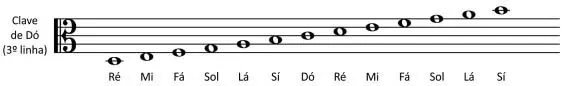

pag 2
É a região onde são escritas as notas na partitura. Ela é composta
por 5 linhas horizontais e paralelas.
Como você pode perceber na imagem acima, existem 4 espaços entre
as linhas. Estes também serão utilizados para a leitura. A
contagem das linhas e dos espaços acontece de baixo para cima.
A figura a seguir mostra como as notas são representadas. De
acordo com a sua posição no pentagrama, elas serão mais graves ou
mais agudas.
No pentagrama podemos representar apenas 9 notas musicais (5
linhas e 4 espaços). Para representar notas mais agudas ou mais
graves, é necessário utilizar as
Linhas Suplementares.

As Linhas Suplementares (também chamadas de complementares ou
auxiliares) são pequenos trechos de linha que se comportam como
uma extensão da pauta, podendo ser adicionadas tanto para cima
quanto para baixo.
pag 3
Claves
Ao utilizarmos somente o pentagrama nós temos uma representação
relativa das notas, ou seja, sabemos que um som é mais agudo do
que outro, sem, contudo, definirmos as notas. Para descobrirmos as
notas musicais na pauta, devemos definir pelo menos uma delas
através das Claves, para, então, completarmos as outras seguindo a
sequência: Dó – Ré – Mi – Fá – Sol – Lá – Si.
De forma resumida, as Claves indicam a nota e a linha de
referência a serem adotadas na pauta.
Temos atualmente três tipos de Claves: Clave de Sol; Clave de Fá;
Clave de Dó.
A clave utilizada no pentagrama determinará a altura das notas
emitidas pelo instrumento a ser representado (graves ou agudas).
Clave de Sol
Define o lugar da nota sol na segunda linha.
Clave de Fá
Define o lugar da nota fá na quarta linha.
Obs.: Em alguns casos, a Clave Fá pode ser utilizada na 3ª linha.
Clave de Dó
Define o lugar da nota dó na quarta ou na terceira linha.

pag 4
Veja como fica disposição das notas em cada clave:


Dó Central
Para se estabelecer a relação entre duas claves é necessário
utilizar o Dó Central, que é uma nota localizada nas duas claves.

Conforme a imagem a seguir, podemos encontrar o Dó Central na
primeira linha suplementar inferior da Clave de Sol e também na
primeira linha suplementar superior da Clave de Fá.

pag 5
Curiosidade – Utilização das Claves
A clave de Sol é utilizada para instrumentos mais agudos, enquanto
a clave de Fá é utilizada para instrumentos mais graves.
A clave de Dó foi criada para representar vozes humanas em corais.
Porém ela passou a ser bem menos utilizada após a criação das
claves de Sol e de Fá.
A Viola é um dos poucos instrumentos que ainda utilizam a clave de
Dó.